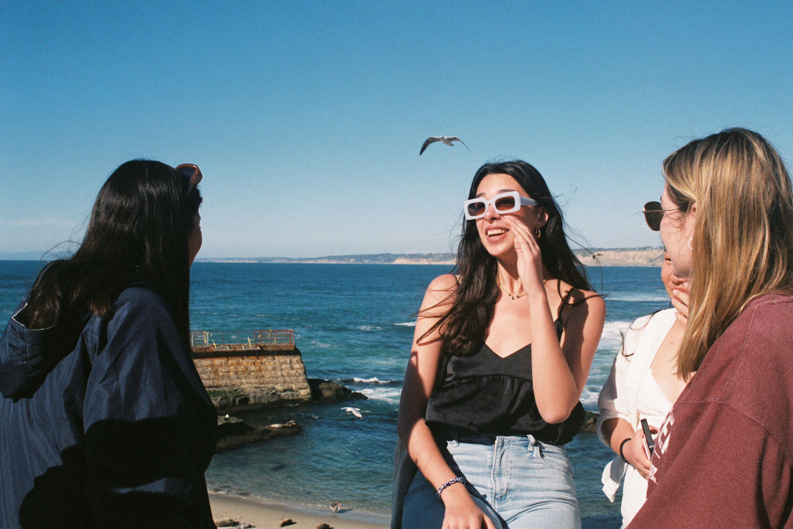
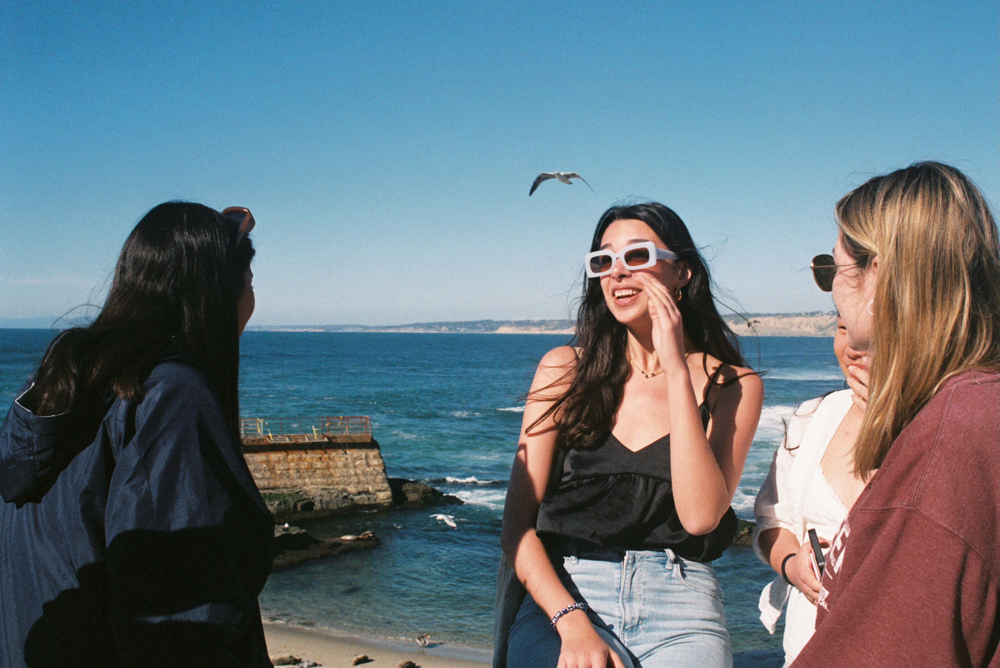
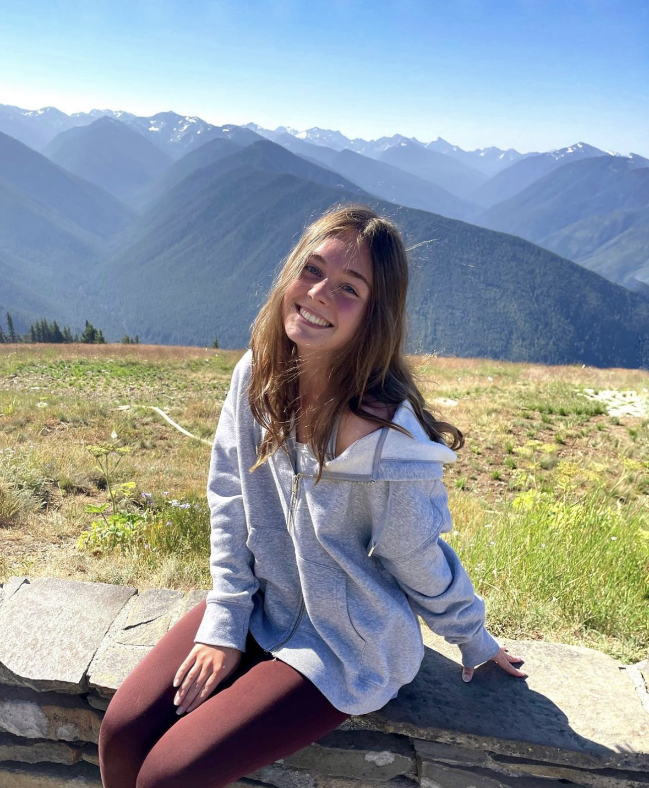

Come explore some of my favorite adventures!
 


This past spring break, my friends and I went to San Diego, California. We went hiking, biking, and spent a lot of time by the beach. These are a few of my film pictures from the trip!
Over Christmas break, I went to New York with a few of my high school friends. We hit nearly every tourist attraction in the city and walked over 10 miles each day. The best part was definitely wandering around, pretending like we were locals.
Last summer, my dad and I went to London! We walked and biked all around the city and also ate a lot of great food. I really loved London, but was surprised that it didn't feel very foreign to me.
A few years ago, my family and I went on a hiking trip in Olympic National Park in Washington. The mountains were huge, we had insane views of the ocean — I would say that this was the most beautiful places I have ever been.
Last year, I went to Hawaii with my family and my two closest friends. This was definitely my favorite vacation ever — we went hiking, snorkeling, spent time by the beach, and took a boat tour of the oceanside cliffs.